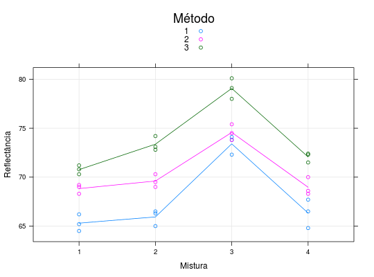

Um experimento foi conduzido para avaliar a dispersão de quatro diferentes pigmentos numa pintura. O procedimento consistiu em preparar cada mistura e aplicá-las num painel usando três métodos diferentes. O experimento é repetido em três dias distintos e a resposta é a porcentagem de reflectância do pigmento.
Um data.frame com 36 observações e 5 variáveis.
paineldiametodmisturreflecPAULA (2004), Exercício 5.6.13, pág. 400.
Myers, R.H.; Montgomery, D. C. e Vining, G. G. (2002). Generalized Linear Models: With Applications in Engineering and the Sciences. John Wiley, New York.
library(lattice) data(PaulaEx5.6.13)#> Warning: data set ‘PaulaEx5.6.13’ not foundstr(PaulaEx5.6.13)#> 'data.frame': 36 obs. of 5 variables: #> $ painel: Factor w/ 12 levels "1","2","3","4",..: 1 1 1 2 2 2 3 3 3 4 ... #> $ dia : Factor w/ 3 levels "1","2","3": 1 2 3 1 2 3 1 2 3 1 ... #> $ metod : Factor w/ 3 levels "1","2","3": 1 1 1 1 1 1 1 1 1 1 ... #> $ mistur: Factor w/ 4 levels "1","2","3","4": 1 1 1 2 2 2 3 3 3 4 ... #> $ reflec: num 64.5 65.2 66.2 66.3 65 66.5 74.1 73.8 72.3 66.5 ...ftable(xtabs(~dia + metod + mistur, data = PaulaEx5.6.13))#> mistur 1 2 3 4 #> dia metod #> 1 1 1 1 1 1 #> 2 1 1 1 1 #> 3 1 1 1 1 #> 2 1 1 1 1 1 #> 2 1 1 1 1 #> 3 1 1 1 1 #> 3 1 1 1 1 1 #> 2 1 1 1 1 #> 3 1 1 1 1xyplot(reflec ~ mistur, groups = metod, auto.key = list(title = "Método"), type = c("p", "g", "a"), data = PaulaEx5.6.13, xlab = "Mistura", ylab = "Reflectância")